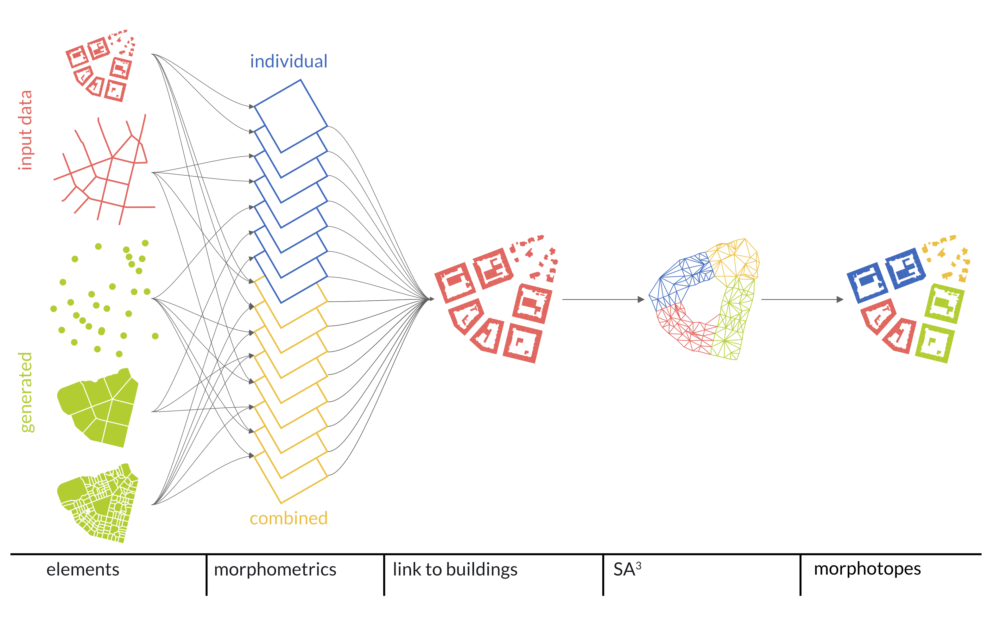
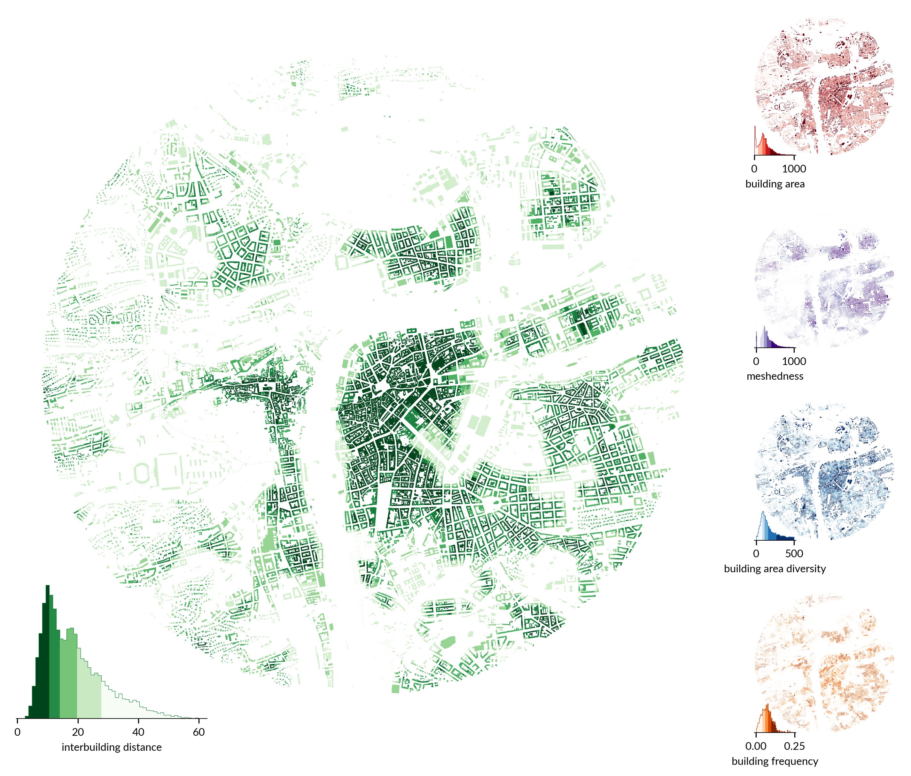
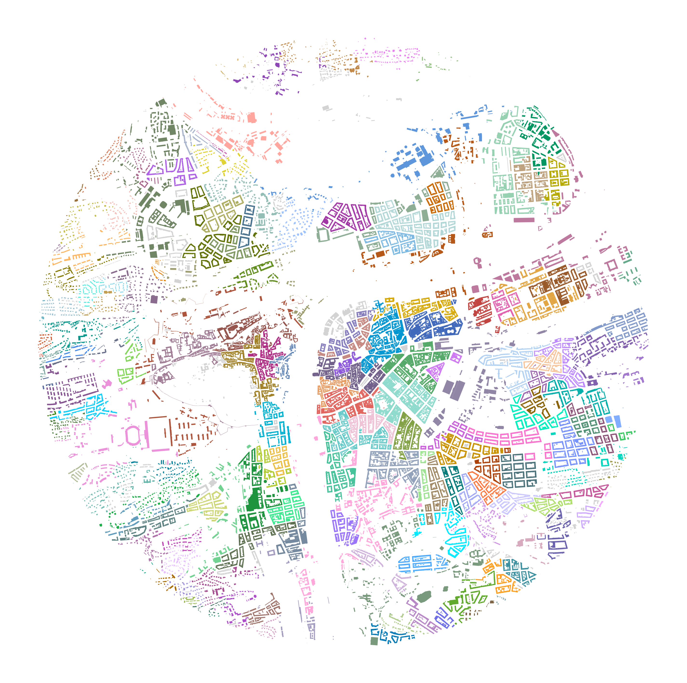

Urban morphology at scale
tools, methods, and data
Charles University
What is urban morphometrics
Not anything new!

What is urban morphometrics
A study of urban form through the means of quantitative assessment of its constituent elements.
Conceptually similar to historico-geographical approach in urban morphology.
Methodologically embedded in spatial data science and geography.
Morphometrics in 2025
availability of data
evolution of software
performance
automatised pre-processing
all that pushes the limits of scalability
scalable urban morphometrics
Data pain points
There is an issue with streets we need to talk about.
A street may not be a street.

What to do
Manual simplification
click click click click click click click click click click click click click click click click sigh click click click click click click click click click click click click click click click click fml click click click click click click click click click click click click I hate it here click click click click click click click click click click click click click click click click click click click click click click click click click click click click click click click click click click click click click click click click sigh click click click click click click click click click click click click click click click click click help click click click click click click click …
we need an algorithm
Adaptive continuity-preserving simplification of street networks
What do you mean by “continuity-preserving”
Face artifact detection

Artifact classification
- artifact polygon contiguity
- isolates
- pairs
- clusters
- network continuity
Isolates
Clusters
Pairs
solve together as a single isolate
solve together as a cluster
Python package neatnet
There is an issue with plots as well.
They are not available as open data
They do not represent morphology
Let’s find a replacement
Morphological tessellation
Enclosed tessellation
Python package momepy
We can measure potentially hundreds of morphometric characters
- dimension
- shape
- spatial distribution
- intensity
- diversity
- connectivity
Our take on morphometrics
Idea of a morphotope

How to capture it



Flexible definition of built-up fabric


Urban Taxonomy
Geography and urban structure


Compression to 2 dimensions using UMAP
Take home points
Times have changed. Methods have changed.
Concepts? Those only evolved.
Urban morphology can be deeply embedded
in spatial data science.
Urban morphometrics can support
quantitative studies done at scale.
Structure of cities is deeply affected
by culture and politics.
We can ask questions like never before.
Do you want to follow up